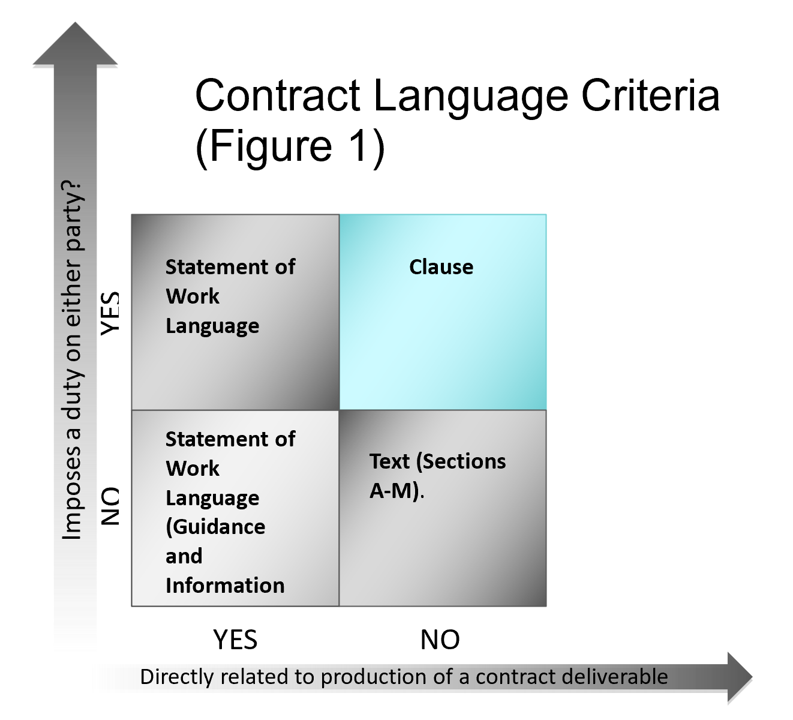

Definitions.
“Acquisition Category” or ACAT is a defense acquisition program designation. For the purposes of NMCARS, this designation also includes “Business System Category” (BCAT) as defined in DoD Instruction 5000.75.
“ASN(RDA) Website” is defined as https://www.secnav.navy.mil/rda/DASN-P and all accompanying pages within the site where DON contracting policy is posted.
“Clause” is defined as language which imposes a duty on the Government or contractor and is not directly related to the production or performance of a contract deliverable as depicted in Figure 1, Contract Language Criteria.

“CCO" is the “Chief of the Contracting Office”. The CCO is the official who has overall responsibility for managing the day-to-day contracting office operations and includes the principal deputy to such official.
“DASN(P)” is the Deputy Assistant Secretary of the Navy for Procurement, Office of the Assistant Secretary of the Navy (Research, Development, and Acquisition). It also includes the Executive Director, DASN(P), and the Navy Senior Services Manager (SSM).
“Deputy/Assistant Commander for Contracts” is the Deputy or Assistant Commander for Contracts or the equivalent at a Systems Command, the Headquarters, NAVFACENGCOM; Deputy Commandant for HQMC, I&L; ONR; MSC; and SSP. It also includes the principal deputy for these officials.
“NAE” is the Navy Acquisition Executive. ASN(RDA) is the NAE.
“Navy” or "DON" is the Department of Navy including the Marine Corps, unless otherwise specified.
“NSPE” is Navy Senior Procurement Executive. ASN(RDA) is the NSPE.
“Provision” is defined as language necessary for a potential offeror to produce a conforming proposal in response to a solicitation.